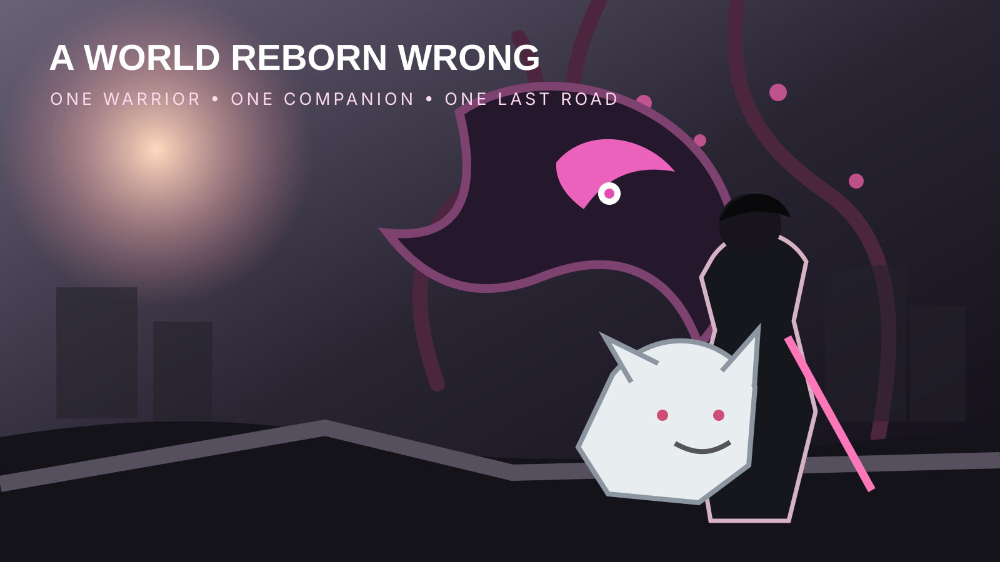

OUR CULTURE / GAMING • AUGUST 3, 2026
Game Freak Steps Outside Pokémon’s Shadow
Beast of Reincarnation launches August 4 with a ruined future Japan, technical sword combat and one very important dog.

For millions of players, Game Freak is nearly inseparable from Pokémon. On August 4, the studio steps into a very different world.
Beast of Reincarnation launches for PlayStation 5, Xbox Series X|S and PC. It will also be available day one through Game Pass. The action RPG follows Emma, an outcast known as a Blightborn, and Koo, her canine companion, through Japan in the year 4026.
One person, one dog
Game Freak describes the project as a one-person, one-dog action RPG. Emma handles real-time sword combat while players issue commands to Koo, blending direct action with turn-based-style tactical decisions.
That combination gives the relationship mechanical weight. Koo is not simply a mascot following behind the protagonist. The pair fight as a unit, and their bond appears central to both the story and progression systems.
A beautiful world gone wrong
The game’s post-apocalyptic Japan is not an empty gray wasteland. Blighted forests erupt through cities and barren ground, while giant creatures and machines rule transformed regions. The world looks alive, but its growth has become hostile.
Emma and Koo must travel across that landscape, defeat powerful bosses and capture their abilities before confronting the Beast of Reincarnation.
Why this matters for Game Freak
Game Freak has created non-Pokémon projects before, but this release arrives with unusual scale: modern multiplatform hardware, premium action-RPG expectations and a prominent Game Pass launch.
The comparison with Pokémon will be unavoidable, especially around visuals, animation and performance. That comparison will not always be fair, since the projects may have different teams, budgets, schedules and platform targets. Still, players will naturally study what changes when Game Freak builds outside the Pokémon production system.
Game Pass opens the door
Launching through Game Pass lowers the risk for curious players. A brand-new intellectual property must compete with familiar sequels and established franchises, but subscription access can turn curiosity into immediate sampling.
The challenge is staying visible. Game Pass is a generous jungle, and new releases can either become the creature everyone talks about or disappear beneath the canopy.
What remains unproven
The trailers and official descriptions cannot confirm how responsive the combat feels, how intelligently Koo behaves, how varied the bosses are or whether the story earns its emotional weight. This is a launch preview, not a scored review.
RogueVerse launch outlook
Beast of Reincarnation is intriguing because it is both a new action RPG and a test of Game Freak’s broader identity. Its ruined world is visually distinct, its companion system has emotional potential and its combat concept could separate it from more conventional releases.
For decades, Game Freak sent players into tall grass looking for monsters. This time, the grass is coming for us.